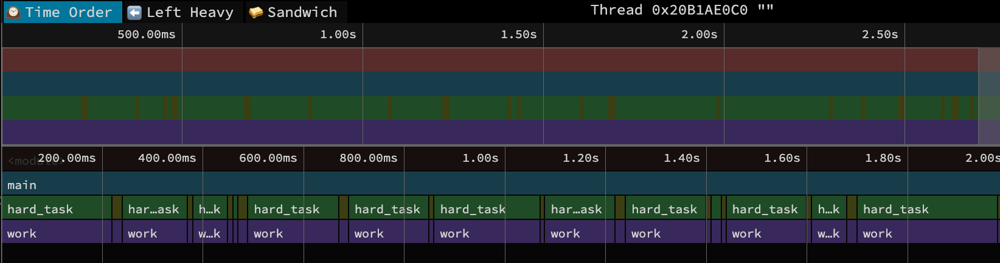
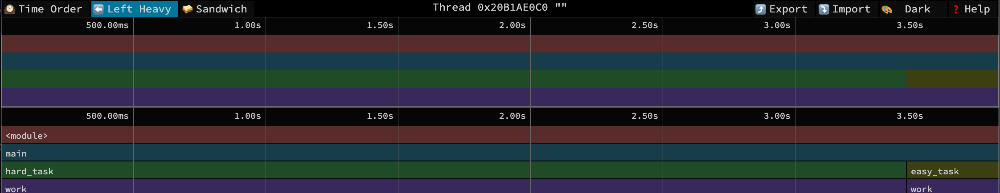
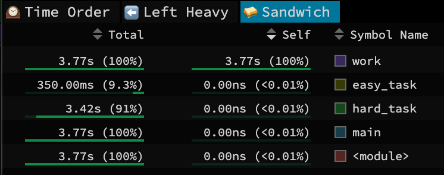
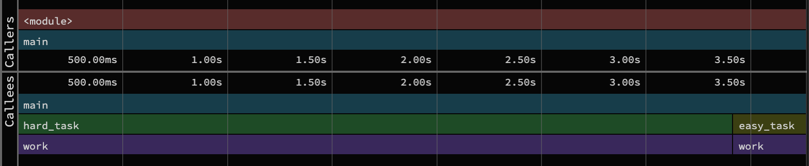

Profiling Quantum Compilers: Introduction
As part of my work on ucc, I’ve spent most of my time to date on benchmarking. In the companion repository ucc-bench, we’ve collected a small suite of representative circuits and built tooling to automate benchmarking performance of quantum compilers, especially as new versions are released.
Recently, my focus has shifted more toward the internals of quantum compilation, and I wanted to get a deeper understanding of how these compilers actually work. I’ve read papers and stepped through code with a debugger, but the performance angle has been nagging at me. We’re seeing a trend of moving core compiler optimization passes to high-performance languages like Rust 1, so I figured a great way to learn why is to see where today’s compilers spend their time. By profiling a compiler on a benchmark circuit, we can gain insight into both architecture and performance bottlenecks.
This is the first post in a series where I’ll explore the performance of quantum compilers by putting them under the profiler.
Profiling Quantum Compilers
In this post, I briefly introduce profiling Python with the amazing py-spy tool. I won’t go into exhaustive detail on profiling, but I want to provide just enough background (by way of an example) to understand the results in later posts. I’ll also give a brief overview of the repository that contains the code and scripts used to generate the compiler profiling data.
Profiling and py-spy
Profiling is the analysis of a program’s execution to understand where it’s spending its resources. For our purposes, we care about one primary resource: time. We want to know which functions are making the compiler slow.
py-spy is a fantastic sampling profiler for Python with minimal overhead. It captures a sample of a running program’s call stack at a regular frequency (say 100 times per second). By aggregating thousands of these samples, py-spy builds a statistical picture of where the program spends its time. A crucial feature for our work is the --native flag2. This lets py-spy record non-Python parts of the call stack, letting us look inside the compilers that mix Python with native code.
2 Unfortunately, --native is only supported on linux/windows and not my Mac :(. That’s why I used Github codespaces below.
An example
Let’s look at an example adapted from a classic post on how profilers can be misleading. Turns out modern sampling profilers like py-spy handle the issue in that post, but its a good way to explore the visualizations py-spy generates.
Consider this Python script
def work(n):
# This is a stand-in for a real computational task.
i = 0
while i < n:
i += 1
def easy_task():
# A task that calls 'work' with a small input.
work(100_000)
def hard_task():
# A task that calls 'work' with a much larger input.
work(1_000_000)
def main():
while True:
easy_task()
hard_task()
if __name__ == "__main__":
main()In this code, both easy_task() and hard_task() call the same function, work(), but with vastly different workloads. A simpler profiler that only tracks how much time is spent on specific lines of code would just tell us work() is slow, but not why. A sampling profiler like py-spy, by virtue of collecting the entire call stacks, tells us both where the program is but also how it got there. This means it can distinguish call paths that get to work(), differentiating calls that come by way of easy_task() vs hard_task().
Let’s see this in action. Assuming the above is saved to a main.py, you would run3 the command below for a few seconds and then kill the process:
3 On my mac, I need to run this as sudo for py-spy to be able to introspect the running process. I didn’t use --native since this is pure python.
$ py-spy record --format speedscope -o profile.json --function -- python main.pyHere, we tell py-spy to record a profile of python main.py and save it to the file profile.json4. It uses the speedscope format, which you can upload to http://speedscope.app/ to visualize.
4 I also passed --function to aggregate samples by the first line number of a function versus the sampled number. This way whether the sample is taken when we are at the i+=1 or the while i <n: line in work(), the profile result groups them together. If we didn’t do this, the visualization would end up creating an entry for each distinct line-number of work() sampled and make it harder to analyze the charts.
Let’s walk through the speedscope view of these results:
Time Order View
 This is the default view when you first load the profile in speedscope. Time flows from left to right, and along the bottom, you see the the call stack at each point in time. So the blue bar with main() covers the entire view, then beneath it you see the alternating calls of hard_task() and easy_task() (although easy is too narrow to see its name!). The width of each box corresponds to the CPU time of that function call5. Mousing over a function creates a pop-up with the specific duration and source file for that call. Clicking on a function opens a call-stack view at the bottom, and shows time spent on this specific instance of the function call and aggregate time spent on all such function calls. There’s not a ton more to glean from this simple example, since the code is small enough that we already know a lot about its execution.
5 That is, the time spent in that function call and it’s descendant calls. This might be much longer than the time spent actually in that function itself (the self-time) if it mostly calls into other functions.
For more complex applications, the time ordered view is a great way to understand the flow of the program, where wider rectangles guide you to the longer running parts of the program. I find it useful to start with this view to confirm your profile captured what you intended, and then to orient yourself around “goldilocks” function calls. These are functions that aren’t super deep in the call stack that its unclear how you got there, but are also not too high-level that they are basically the whole program. Somewhere in the middle is just right.
Left Heavy View

The left heavy view throws out the time-ordered aspects, groups similar call stacks together, and then puts the heavier (longest running) stacks to the left of the plot. It has the same mouse-over and click details as the time-order view. Use this view to see where the program is spending its time overall, regardless of the order of execution. For this example, it nicely shows most time in main() is spent on hard_task() vs easy_task(), even though there are corresponding calls to work() below each. This view is useful when there are lots of interleaved function calls but you just care about the aggregate time spent in each alternate.
Sandwich View
This last view has two useful aspects. The first is the table in the image above. This shows the total time and self-time spent in a function call, and as a percent of the entire profile result.
Two Times
 Functions with large/large percent of self-time are hotspots to focus on for optimization. Self-time means the CPU is busy working directly in that function, so you can consider zooming in and doing some micro-benchmarking and optimizations on just that function. For our simple example, it nicely shows that the CPU is really spending its time in that silly loop in work(). If that were real code though, finding a way to optimize it would nicely improve overall performance.
Functions with large/large percent of total-time indicate the primary paths of program execution. This is the total CPU time spent where this function was somewhere in the call stack, but not necessarily where the program was running when sampled. So by definition, main() and other high-level functions have large percentages, but that doesn’t really help you understand much. Instead, you would want to scroll down this list to get to the aforementioned goldilocks level. For me, this is when I get to a function and go “huh, I’m surprised it spent that much time here”. For our simple example, we see that hard_task is indeed ten times heavier than easy_task.
🥪🥪🥪🥪🥪🥪🥪 (the actual sandwich)
 If you click on a row in this list, you get the sandwich view shown above. This view splits the timeline around that function, effectively filtering the full time-ordered view to just callers and callees of that function. Not suprisingly, this is useful to zoom in on a function and get a sense of where it falls in the program execution. I find this especially useful to understand the architecture of the program.
Setup
With that whirlwind tour of profiling behind us, how will we explore quantum compilers? https://github.com/bachase/quantum-compiler-profiling is a repository with all you need!
The code uses a 100-qubit QFT circuit in ucc-bench (by way of benchpress and QASMBench). The script in main.py then transpiles/compiles this circuit via Qiskit, ucc, pytket, Cirq, or pyqpanda3. There’s a corresponding run_bench.sh to generate the profiles using py-spy, and there are sub-directories with some profiles checked in6. I generated these profiles under a GitHub codespace (which you can do yourself by forking within GitHub). A tad more detail is in the README, but the upshot is we will use speedscope to explore each compiler’s results in the native.profiles directory in future posts.
6 I ran profiles with & without --function to aggregate samples to start of functions. I don’t a priori know much about each function. Some might be lengthy with lots of internal loops, so I’d rather keep samples of different lines separate to potentially identify that structure. But having the aggregated view with --function will also help coarse grain over those details when first analyzing results.
The QFT circuit was chosen based in recent ucc-bench performance results:
| Compiler | benchmark_id | raw_multiq_gates | compile_time_ms | compiled_multiq_gates |
|---|---|---|---|---|
| ucc | qft | 10050 | 478.4261 | 2740 |
| pytket-peep | qft | 10050 | 48776.9968 | 4498 |
| qiskit-default | qft | 10050 | 509.0576 | 3570 |
| cirq | qft | 10050 | 32392.2503 | 4648 |
| pyqpanda3 | qft | 10050 | 130.838 | 2740 |
There is some reduction in two-qubit gates, and the circuit takes a non-trivial amount of compile time. So something interesting is happening!
AI Disclaimer: I’ve used LLMs to review and give feedback on this post, but the original content was written by me.